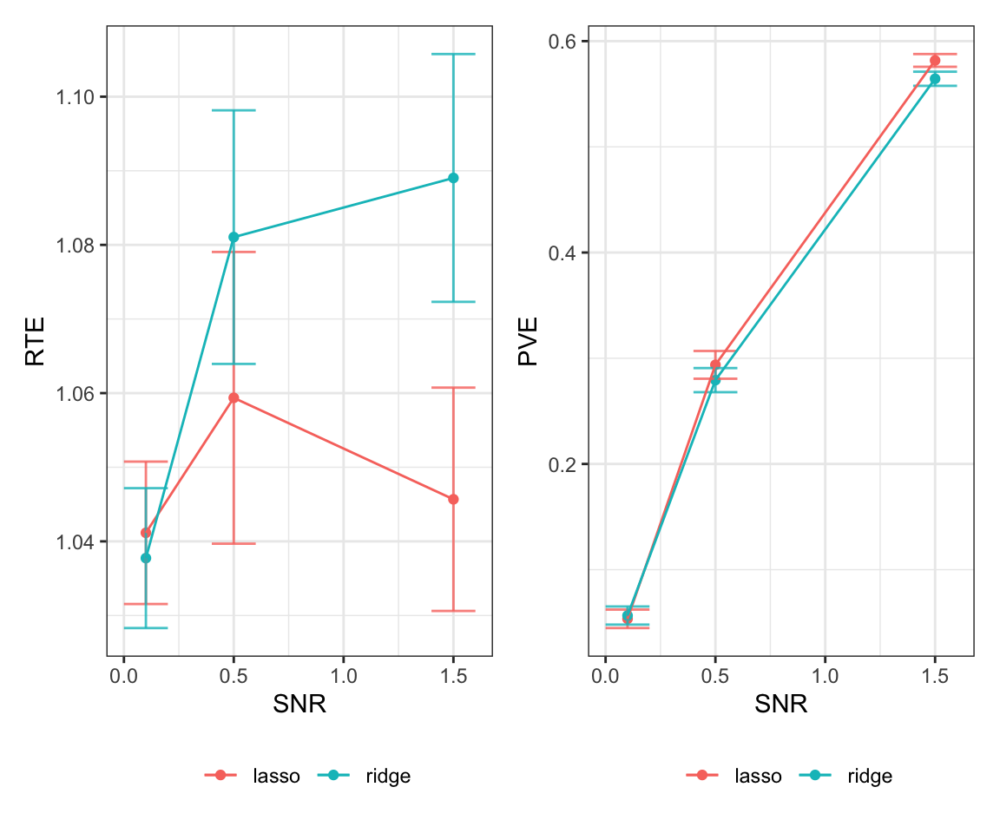

library(MASS)
library(tidyverse)
library(patchwork)
library(glmnet) 19 Case Study: Designing a Simulation Study
Simulation studies are an ideal setting for utilizing functions. When conducting a simulation study, we often need to generate data, run statistical methods, and collect results and we replicate this for a large number of simulations. Functions will ensure that we can write cleaner and reproducible code. In this case study, we will write the code for a simulation study that is based on the analysis by Hastie, Tibshirani, and Tibshirani (2020), which compared different methods for sparse regression. For our purposes, we will focus on the comparison between lasso and ridge regression, introduced in Chapter 15.
Our goal is to understand the predictive power of the two models for different data settings. We will generate our training and test data using the following data generating mechanism which relies on the number of observations \(n\), the number of predictors \(p\), the sparsity \(s \leq p\), predictor correlation level \(\rho\), and \(\nu\) signal-to-noise ratio.
We define a vector of coefficients \(\beta \in \mathbb{R}^p\) which has its first \(s\) components equal to 1 and the rest equal to 0. Note that our model will not have an intercept.
We draw the rows of the predictor matrix \(X \in \mathbb{R}^{n \times p}\) from a multivariate normal distribution \(N_p(0, \Sigma)\), where \(\Sigma \in \mathbb{R}^{p \times p}\) has entry \((i,j)\) equal to $^{|i-j|}.
We draw the outcome \(y \in \mathbb{R}^n\) from a normal distribution \(N(X \beta, \sigma^2 I)\), where \(\sigma^2 = \frac{\beta \Sigma \beta}{\nu}\). This ensures that the data has signal-to-noise ratio, defined as \(\text{Var}(x^T \beta)/\text{Var}(\sigma^2)\), equal to \(\nu\).
After generating our data, we will use 5-fold cross-validation to fit a lasso or ridge regression model on the training data to get estimated coefficients \(\hat{\beta}\). Last, we will predict on the withheld test set. The evaluation metrics we are interested in are the time to fit the model (in seconds), the relative test error \[\text{RTE} = \frac{(\hat{\beta}-\beta)^T \Sigma (\hat{\beta}-\beta)+\sigma^2}{\sigma^2}, \] and the proportion of variance explained \[\text{PVE} = 1 - \frac{(\hat{\beta}-\beta)^T \Sigma (\hat{\beta}-\beta)+\sigma^2}{\beta^T \Sigma \beta + \sigma^2}.\] In Hastie, Tibshirani, and Tibshirani (2020), they vary all five parameters \(n\), \(p\), \(s\), \(\rho\), and \(\nu\) to observe how the data generation impacts these metrics.
19.1 Outlining Our Approach
Before coding our method, let’s recap the steps we will need to perform for a single simulation and practice top-down programming. In a single simulation, we need to generate our training and test data, fit our models, and store the results in a way that we can use later. There are two potential sketches of how we can program this code shown in Figure 19.1. Take a look at the differences. In the first, we are storing the data we generate and have a separate function for each method. In the second, we have a function that calculates our end metrics for an inputted model and we have a function that runs through the different methods. A benefit of the first approach is that it will be more flexible; if we think of another method we want to compare we would be easily able to add it without having to re-run any other code. A benefit of the second approach is that we are ensuring that the results stored for each method are the same. Of course, you could also do a hybrid between the two and use a metrics function in the first approach.
Let’s take a closer look at the second approach. For our metrics function, we have missed some inputs we will need. In particular, in order to calculate our end metrics, we will need to know the true coefficients \(\beta\), the covariance matrix \(\Sigma\), and the level of noise \(\sigma\). Therefore, rather than returning a data frame, we will return a list that will contain \(X\), \(y\), and these values. For the first approach, this would require saving this information in a text file. Comparing between our two options, we will implement the second approach that does not store data. Another thing we can notice in our current sketch is that we likely want to store the results as a csv file, so rather than returning a list, we should return a vector that will correspond to a row in this file. Our final sketch is in Figure 19.2.
19.2 Coding Our Simulation Study
We first load in the packages we will use. We will use the MASS package for the mvrnorm() function, which generates data from a multivariate normal distribution, we will use the glmnet package to implement our lasso and ridge models, and we will use the tidyverse and patchwork packages for summarizing and plotting the results.
We start by writing our function to generate our data. Our input here will be the parameters \(n\), \(p\), \(s\), \(\rho\), and \(\nu\) and our output will be a list.
#' Simulate data
#'
#' @param n Number of observations
#' @param p Number of variables
#' @param s Sparsity level (number of nonzero coefficients)
#' @param snr Signal-to-noise ratio
#' @param rho Predictor correlation level
#' @return List containing simulated covariate matrix `X`,
#' outcome vector `y`, true coefficient vector `beta`,
#' covariate matrix `Sigma`, and variance of y `sigma`
simulate_data <- function(n, p, s, snr, rho) {
# Generate covariance matrix
cov_mat = matrix(0, nrow = p, ncol = p)
for (row in 1:p) {
for (col in 1:p) {
cov_mat[row, col] = rho^(abs(row-col))
}
}
# Generate X
x <- mvrnorm(n=n, mu=rep(0,p), Sigma = cov_mat)
# Generate beta values
b <- rep(0, p)
b[1:s] <- 1
# find values
mu <- x %*% b
intercept <- -mean(mu)
# Calculate variance
var <- as.numeric((t(b) %*% cov_mat %*% b)/snr)
# Generate y values
y <- mvrnorm(mu = mu, Sigma = var*diag(n))
return(list(X = x, y = y, beta = b, Sigma = cov_mat, sigma = var))
}Next, we will write a function for our model metrics. The only input we need from our model is the estimated coefficients. Otherwise, all of the information comes from the data we generate with the function we just wrote. We will utilize this list format to extract out the values needed for our formulas.
#' Return model metrics
#'
#' @param coef_est Vector with estimated coefficients
#' @param test_data Withheld test set (`simulate_data()` output)
#' @return Vector with relative test error (RTE) and proportion
#' of variance explained (PVE).
get_metrics <- function(coef_est, test_data) {
# Extract out values needed
coef_true <- test_data$beta
Sigma <- test_data$Sigma
var_y <- test_data$sigma
# Calculate relative test error
RTE <- (t(coef_est - coef_true) %*% Sigma %*%
(coef_est - coef_true) + var_y) /
var_y
# Calculate PVE
# Proportion of variance explained
PVE <- 1 - (t(coef_est - coef_true) %*% Sigma %*%
(coef_est - coef_true) + var_y) /
(var_y + t(coef_true %*% Sigma %*% coef_true))
return(c(RTE = RTE, PVE = PVE))
}Next, we will write a function that takes in the given parameters, fits the two models, and outputs the evaluation metrics. In this case, we will let the parameters be a named vector that contains all the components needed for the data simulation. We will also include an optional argument to set the random seed. In the code below, we find the time it takes to fit each model using Sys.time(). This function finds the current system time. Therefore, we can find the difference between them using the difftime() function. We also make sure to format the lasso and ridge results in the same manner.
#' Model selection simulation
#'
#' @param params named vector containing all parameters needed for
#' data generation (rho, snr, n, p, s)
#' @param seed (optional) random seed to set before setting folds,
#' by default not used
#' @return Vector with parameter values, results
model_selection <- function(params, seed = NULL) {
# Extract out parameters
n <- params['n']
p <- params['p']
s <- params['s']
snr <- params['snr']
rho <- params['rho']
# Generate training and test data
train <- simulate_data(n, p, s, snr, rho)
test <- simulate_data(n, p, s, snr, rho)
# Set folds, if needed
if (!is.null(seed)){
set.seed(seed)
}
k <- 5
folds <- sample(1:k, nrow(train$X), replace=TRUE)
# Lasso model
start_lasso <- Sys.time()
lasso_cv <- cv.glmnet(train$X, train$y, nfolds = k, foldid = folds,
alpha = 1, family = "gaussian",
intercept=FALSE)
lasso_mod <- glmnet(train$X, train$y, lambda = lasso_cv$lambda.min,
alpha = 1, family = "gaussian", intercept=FALSE)
end_lasso <- Sys.time()
# Get lasso results
lasso_time <- as.numeric(difftime(end_lasso, start_lasso,
units = "secs"))
lasso_results <- c(lasso_time,
get_metrics(coef(lasso_mod)[-1], test))
names(lasso_results) <- c("lasso_sec", "lasso_RTE", "lasso_PVE")
# Ridge model
start_ridge <- Sys.time()
ridge_cv <- cv.glmnet(train$X, train$y, nfolds = k, foldid = folds,
alpha = 0, family = "gaussian",
intercept=FALSE)
ridge_mod <- glmnet(train$X, train$y, lambda = ridge_cv$lambda.min,
alpha = 0, family = "gaussian", intercept=FALSE)
end_ridge <- Sys.time()
# Get ridge results
ridge_time <- as.numeric(difftime(end_ridge, start_ridge,
units = "secs"))
ridge_results <- c(ridge_time,
get_metrics(coef(ridge_mod)[-1], test))
names(ridge_results) <- c("ridge_sec", "ridge_RTE", "ridge_PVE")
# Full results
res <- c(n, p, s, snr, rho, lasso_results, ridge_results)
return(res)
}19.3 Results
Now it’s time to run our simulation! We first need to find the combinations of parameters we want to use in our simulation design. In our case, we will set \(n = 500\), \(\rho = 0.35\), and \(s = 10\). We will vary \(p \in \{50, 100\}\) and the signal-to-noise ratio \(\nu \in \{0.1, 0.5, 1.5\}\). We also want to run each possible combination of parameters ten times so that we can average across the results. We use the expand.grid() function to create a matrix that contains a row for each simulation.
# Set up parameter grid
rho_grid <- c(0.35)
snr_grid <- c(0.1, 0.5, 1.5)
n_grid <- c(500)
p_grid <- c(50, 100)
s_grid = c(10)
iter_grid <- 1:5
param_grid <- expand.grid(rho = rho_grid, snr = snr_grid, n = n_grid,
p = p_grid, s = s_grid, iter = iter_grid)
# convert to numeric
param_grid <- as.matrix(param_grid)
head(param_grid)
#> rho snr n p s iter
#> [1,] 0.35 0.1 500 50 10 1
#> [2,] 0.35 0.5 500 50 10 1
#> [3,] 0.35 1.5 500 50 10 1
#> [4,] 0.35 0.1 500 100 10 1
#> [5,] 0.35 0.5 500 100 10 1
#> [6,] 0.35 1.5 500 100 10 1Recall that our main function took in a named vector that contained all needed parameters. This allows us to use an apply() function to run our simulation. In order to summarize by method, we pivot the results to a longer form with a column for method.
# Run experiments
results <- apply(param_grid, 1, model_selection) %>% t()
# Convert to long data frame
results <- as.data.frame(results) %>%
pivot_longer(cols = starts_with(c("lasso", "ridge")),
names_to = c("method", ".value"), names_sep="_")Finally, we summarize our results. For example, we can create a table with the average time for each method grouped by the data dimensions. We observe that ridge regression was slower on average than lasso.
avg_time <- results %>%
group_by(method, n, p) %>%
summarize(avg_seconds = round(mean(sec),3)) %>%
ungroup()
avg_time
#> # A tibble: 4 × 4
#> method n p avg_seconds
#> <chr> <dbl> <dbl> <dbl>
#> 1 lasso 500 50 0.036
#> 2 lasso 500 100 0.059
#> 3 ridge 500 50 0.049
#> 4 ridge 500 100 0.073We can also create summary plots of our evaluation metrics similar to Hastie, Tibshirani, and Tibshirani (2020). To do so, we create one last function that will create a plot of the relative test error and percentage of variance explained across different signal-to-noise ratios. This allows us to regenerate this plot for different parameter settings.
#' Generate RTE and PVE plots for a given set of parameters
#'
#' @param results Data frame with simulation results
#' @param n_input Number of observations
#' @param p_input Number of variables
#' @param s_input Sparsity level
#' @return ggplot object
generate_plot <- function(results, n_input, p_input, s_input) {
setting <- results %>%
filter(n == n_input, p == p_input, s == s_input) %>%
group_by(method, snr) %>%
summarize(mean_RTE = mean(RTE, na.rm = TRUE),
sd_RTE = sd(RTE, na.rm = TRUE),
mean_PVE = mean(PVE, na.rm = TRUE),
sd_PVE = sd(PVE, na.rm = TRUE))
rte_plot <- ggplot(setting) +
geom_point(aes(x = snr, y = mean_RTE, color = method)) +
geom_errorbar(aes(x = snr, ymin = mean_RTE - sd_RTE,
ymax = mean_RTE + sd_RTE, color = method),
alpha = 0.8, width = 0.2) +
geom_line(aes(x = snr, y = mean_RTE, color = method)) +
theme_bw() +
theme(legend.position = "bottom") +
labs(x = "SNR", y = "RTE", color = "")
pve_plot <- ggplot(setting) +
geom_point(aes(x = snr, y = mean_PVE, color = method)) +
geom_errorbar(aes(x = snr, ymin = mean_PVE - sd_PVE,
ymax = mean_PVE + sd_PVE, color = method),
alpha = 0.8, width = 0.2) +
geom_line(aes(x = snr, y = mean_PVE, color = method)) +
theme_bw() +
theme(legend.position = "bottom") +
labs(x = "SNR", y = "PVE", color = "")
full_plot <- rte_plot + pve_plot
return(full_plot)
}
generate_plot(results, 500, 50, 10)
generate_plot(results, 500, 100, 10)